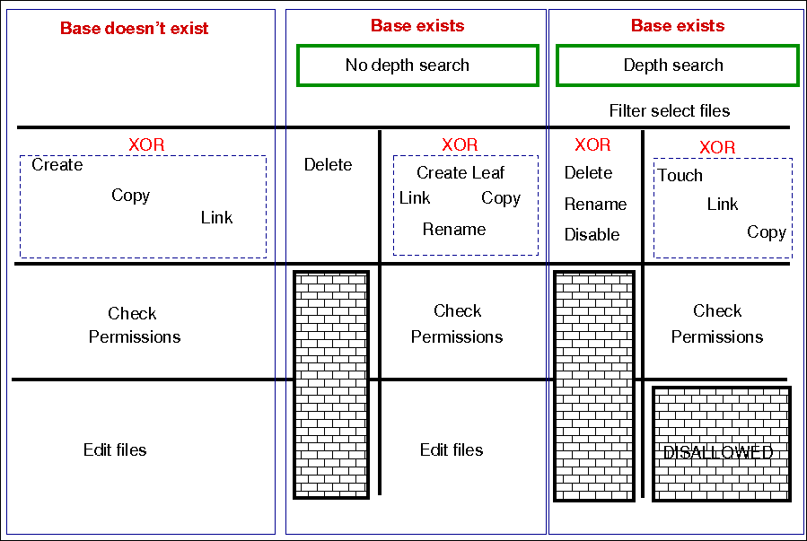

File handling in cfengine 3 is more integrated than in cfengine 3. This helps both the logic and the efficiency of implementation. File handling is now more powerful, and uses regular expressions everywhere for pattern matching. The old "wildcard" expressions * and ? are deprecated, and everything is based consistently on POSIX extended regular expressions.
There is a natural ordering in file processing that obviates the need for the actionsequence. The trick of using multiple actionsequence items with different classes, e.g.
actionsequence = ( ... files.one .. files.two )can now be handled more elegantly using bundles. The natural ordering uses that fact that some operations are mutually exclusive and that some operations do not make sense in reverse order. For example, editing a file and then copying onto it would be nonsense. Similarly, you cannot both remove a file and rename it.
Delete-create (normal ordering) makes sense Create-delete does not
The diagram below shows the ordering. Notice that the same ordering applies regardless of file type (plain-file or directory).

for each file promise-object
{
if (depth_search)
do
DepthSearch (HandleLeaf)
else
(HandleLeaf)
done
}
HandleLeaf()
{
Does leaf-file exist?
NO: create
YES: rename,delete,touch,
do
for all servers in {localhost, @(servers)}
{
if (server-will-provide)
do
if (depth_search)
embedded source-depth-search (use file source)
break
else
(use file source)
break
done
done
}
done
Do all links (always local)
Check Permissions
Do edits
}
Cfengine 2 Cfengine 3
/one/*/two/thr*/four /one/.*/two/thr.*/four
When we talk about a depth search it refers to a search which starts
from the one or more matched base-paths.
Promise theory tells us that there are two distinct kinds of depth search:
When we are copying or linking to a source, it is the search over the remote source that drives the content of a promise. In general, the sources are on a different device to the images that make the promises. For all other promises, we search over existing local objects.
If we specify depth search together with copy of a directory, then the implied remote source search is assumed, and it is made after the search over local objects. Since this could lead to confusion a warning is issued. In general it is not recommended to mix searches without a full understanding of the consequences, but this might occasionally be useful, e.g. tidy and then copy. This would not be a convergent operation however.
Depth search is not allowed with editfiles promises.